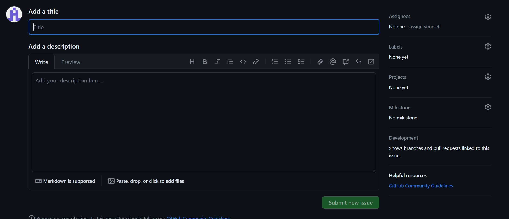
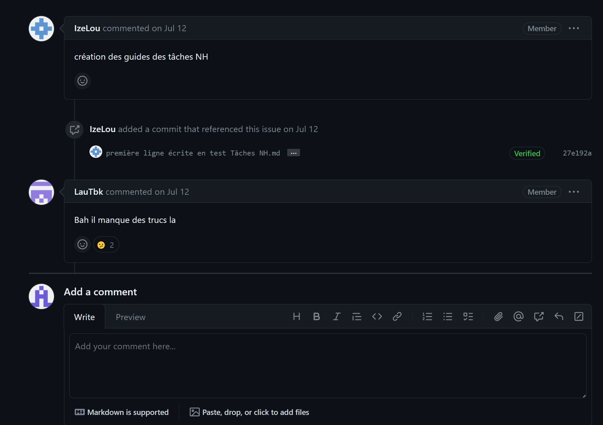

Bien sûr, voici la correction de votre texte :
Contexte
Le Mallouestan, en cherchant un outil collaboratif, a défini les différents besoins suivants :
- Travailler à plusieurs sur plusieurs fichiers
- Avoir un historique des modifications
- Pouvoir proposer plusieurs versions de ses ressources
- Permettre à des personnes extérieures de proposer d’autres versions de ces ressources
- Une solution permettant de publier ses ressources en ligne
Nous avons retenu la solution GitHub qui répond à ces besoins gratuitement, malgré ses défauts, notamment le fait qu’elle est peu connue par les personnes que nous souhaitons encourager à participer et collaborer avec nous.
Si vous souhaitez contribuer
Peut-être avez-vous des questions sur notre charte, vu une faute d’orthographe ou une formulation problématique, ou vous voulez peut-être ajouter des points sur notre charte ou l’un de nos documents ; dans tous les cas, n’hésitez pas. Si vous souhaitez contribuer, vous pouvez le faire de deux manières. Dans ce guide, nous nous concentrons sur la première, qui est simple et rapide, vous permettant de vous exprimer facilement et de faire valoir vos avis.
Étape 1 : Créer un compte sur GitHub
Il vous suffit de créer un compte sur GitHub, normalement au lien suivant : Rejoindre GitHub.
Étape 2 : Aller sur l’un de nos “repositories”
Un “repository” (référentiel en français) est le terme que GitHub utilise pour regrouper un ensemble de fichiers. Vous pouvez trouver tous nos “repositories” ou référentiels à l’adresse suivante : Tous nos référentiels
Étape 3 : Créer une “issue” sur un repository
Une “issue” (littéralement problème) est le nom que GitHub utilise pour un point à soulever. Ce genre de ticket a un titre et une description permettant d’expliquer le problème ou le sujet souhaité. Une fois sur le référentiel (étape 2), naviguez vers l’onglet “Issues” et cliquez sur le bouton vert “New issue” en haut à droite. Remplissez les champs et appuyez sur le bouton vert en bas du formulaire.

Étape 4 : Suivez et échangez avec nous
C’est tout, vous avez contribué, et nous vous en remercions. C’est grâce aux critiques et à la collaboration que nous sommes arrivés là. Vous pouvez voir nos réponses, modifications ou remarques sur l’ “issue” que vous avez créé.

Vous pouvez également participer en donnant votre avis sur les autres issues et fils de discussions créés.
La liste des “issues” peut être trouvée ici : Liste des issues pour le référentiel des documents collaboratifs.


{kind=link}